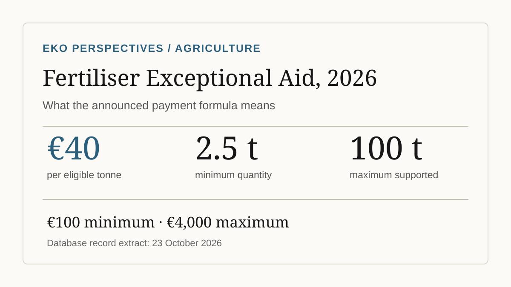

Ireland’s fertiliser support scheme 2026: who qualifies and how much will farmers get?

Graphic: EKO Perspectives, based on the Department’s scheme details reported by RTÉ on 13–14 October 2026. Amounts are illustrative for qualifying farmers.
Ireland’s €46.2 million Fertiliser Exceptional Aid Scheme will pay eligible farmers €40 per tonne, using purchase records held on the National Fertiliser Database. The minimum qualifying quantity is 2.5 tonnes, and support is capped at 100 tonnes, implying payments from €100 to €4,000 under the stated formula. Most farmers do not need to submit a separate application. The immediate date to know is 23 October 2026, when the Department plans to extract the fertiliser records used to determine payments. RTÉ’s account of the announced scheme sets out the eligibility rules and deadline.
That offers a clear piece of advice before any wider policy argument: check that the purchases recorded under your holding are correct. The payment is not based on a new claim form explaining how much fertiliser you bought. It is being calculated from information already in the system.
Who qualifies for the fertiliser payment?
Under the arrangements announced on 13 October, the standard farmer must have submitted a valid 2026 Basic Income Support for Sustainability (BISS) application and be registered as a Fertiliser End User (FEU) on the National Fertiliser Database. The payment calculation uses purchases from the 2025 fertiliser year, 15 September 2024 to 14 September 2025, rather than purchases made during the calendar year 2026. Agriland’s scheme summary and the official National Fertiliser Database guidance explain the records involved.
There are two important exceptions. New entrants and young farmers who began farming in 2026, and therefore lack the preceding year’s purchasing history, can have their 2026 fertiliser-year purchases used, provided they submitted a valid 2026 BISS application. Horticultural producers who do not apply for BISS can qualify through a 2026 Department-issued Plant Health Registration Number or Horticulture Food Registration Number. These cases matter because a payment scheme based entirely on established farm records would otherwise risk excluding some of the businesses facing the same input-price shock.
How much could a farmer receive?
For an eligible holding within the specified limits, the arithmetic is straightforward. Multiply eligible recorded tonnes by €40.
| Recorded eligible fertiliser | Illustrative payment |
|---|---|
| 2 tonnes | No payment under the 2.5-tonne threshold |
| 2.5 tonnes | €100 |
| 10 tonnes | €400 |
| 25 tonnes | €1,000 |
| 50 tonnes | €2,000 |
| 100 tonnes or more | €4,000 maximum |
The examples assume the holding satisfies the other conditions and its purchase records are accepted. They are not an individual payment determination. The Department has indicated that payments are intended before the end of 2026, subject to the scheme’s administration. Farmers should use the National Fertiliser Database guidance and contact their merchant or adviser if purchase entries appear incomplete.
Why does 23 October matter?
The Department will take its database extract on Friday, 23 October 2026. That makes the preceding days consequential. A missing or incorrect merchant record can affect not only the size of a payment but, for a holding near the 2.5-tonne threshold, whether it qualifies at all.
Farmers should confirm that their FEU registration is correct and that fertiliser purchases in the relevant period were accurately recorded. This is a records check, not an instruction to buy extra fertiliser. Purchasing fertiliser now does not change the historic 2025 reference period for an established farmer.
What does the payment formula reward?
The government has a reasonable administrative argument. It wants to move emergency assistance without asking every farmer to complete another application. The National Fertiliser Database already records transactions, and the BISS system provides an established route to identify active holdings. Minister Martin Heydon described the approach as a way to reduce administration and get liquidity to farmers facing higher input costs. RTÉ reported his explanation.
But administrative convenience is not the same as precise compensation. The scheme is responding to higher costs in 2026 while using purchases largely made between September 2024 and September 2025. It therefore approximates exposure using past fertiliser volume, not the extra euros a particular farm has actually paid during the recent price shock.
Consider two eligible holdings. One bought 50 tonnes in the reference year and is due an illustrative €2,000. Another bought 10 tonnes and is due €400. That fivefold difference follows directly from their recorded volumes. It does not establish that the first farmer’s increase in costs, relative to income, has been five times as severe.
The distinction matters for extensive livestock farms, smaller mixed farms and businesses that have recently changed their cropping or stocking patterns. Past fertiliser volume is a plausible indicator of input use; it is not a direct measure of the distributional burden of a sudden price increase. Nor is tonnage equivalent to nitrogen content, because fertiliser products differ in composition and price.
There is a counterargument worth taking seriously. Trying to calculate each farm’s actual incremental cost could delay relief, require difficult counterfactual price comparisons and create opportunities for error. A formula based on established records is quicker and more transparent. The policy choice is between a rough but administratively workable proxy and a more tailored system that could be slower to deliver.
The upper limit of 100 tonnes also constrains payments to very large purchasers, while the 2.5-tonne floor excludes smaller recorded users. Neither threshold is a neutral accounting detail. Each helps determine how the fixed €46.2 million envelope is distributed.
What farmers should take from the announcement
For now, the practical task is to verify 2025 fertiliser-year records before 23 October, or the applicable 2026 records if qualifying as a new entrant. Farmers should not infer their entitlement from the number of bags currently on the farm or from spending during the recent price spike.
The wider evaluation comes later. A successful emergency scheme should be judged not only by how quickly €46.2 million is paid, but by which farms receive it, how accurately the historic-purchase formula reflects their financial exposure and whether the money arrives while it can still ease cash-flow pressures. Those questions cannot yet be settled from the announcement alone.